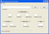

Alter Elements of a loaded Tymeac Queue,
com.tymeac.client.jframe.TyQueData
This frame class allows you to alter certain elements of a Tymeac Queue during execution.
The non-frame version of this class is TyQueDataClient, below.

Tymeac stores the Queue Elements in the Queue Table, or User Class. Class TyQueMaint is available to alter these values for the DBMS. Manually for the User Classes. However, these elements only load at Tymeac Server start-up. This Class provides a way to temporarily change these elements without a shutdown / start-up sequence.
Altering values herein has an immediate effect on performance. Changing the New Thread Thresholds while the Queue is under a heavy load is a way of tuning performance. The effect of the weighted factor, calculated on paper, may not perform as planned.
This Class, in a test environment, gives designers an invaluable tool with which to test performance parameters under many conditions to establish the final values for a production system.
This Class, in a production system, gives system personnel the tool necessary to respond to temporary, changing conditions.
A prime example is altering the number of entries in a Queue's Wait Lists. System personnel can respond to Tymeac scheduling failures caused by exceptional loads on Queues by increasing the maximum number of Wait List entries.
 (click to link to full image)
{kind=link}
Elements
Queue Name -- Enter the name of the Tymeac Queue.
<--- Thresholds --->
OVERALL %: Format as below.
INDIVIDUAL %: Format as below.
WEIGHTED FACTOR: Format as below.
WEIGHTED AVERAGE: Format as below.
This format changed in Release 4.0.3. Before you had to enter the zero and decimal (0.) as part of the number.
The format is any number of digits as a percentage. Tymeac stores the number as a fraction in a floating point number. E.G., for 25 percent, enter 25, Tymeac stores the number as 0.25F, for 5 percent, enter 05, Tymeac stores the number as 0.05F.
<--- Threads --->
Idle Wait Time --The time, in seconds, the Queue Thread remains waiting for work and selectable. When this time expires, the Thread changes its status to 'inactive', that is, not directly selectable.
Idle Thread Life -- When non-zero, the time, in seconds, a thread remains alive in an inactive state (see above Idle Wait Time). When this time expires, the Tymeac Monitor informs the Thread to destroy (return in the run() method). When zero, the Tymeac Monitor ignores this field.
<--- Wait Lists --->
Nbr Physical WL Entries -- Enter a new maximum for all Wait Lists.
Nbr Logical WL Entries -- Default (< 1 or > physical) is same as physical. Enter a new value for using Thresholds.
<--- Appl --->
Appl Timeout -- Enter a new maximum timeout value, in seconds, for the Processing Application Class. This overrides both the default and specific time.
Initially displayed with the IMPORT BUTTON is either the default or specific timeout value. As of this writing (release 5.6) the default value is four times the monitor interval. (E.G. if the monitor interval is 60 seconds, then the default timeout value is 240 seconds.) Once set, this permanently overrides the default value.
Buttons
IMPORT -- Displays the Queue Elements.
UPDATE -- Updates the Queue Elements.
Message Block at bottom : -- This is an information message:
Connection failure -- The RMI connection failed or the Tymeac Server returned an invalid message.
Tymeac shutting down -- Tymeac Server is in shut down mode.
Invalid Queue Name | for Update -- The Queue Name does not exist.
Make Changes -- The Elements imported, make any necessary changes.
Successful -- The Queue Elements were updated.
Invalid number of WL Entries -- Entered value < 1 or NaN.
Invalid Overall % -- Entered value not a float.
Invalid Individual % -- Entered value not a float.
Invalid Weighted Factor % -- Entered value not a float.
Invalid Weighted Average % -- Entered value not a float.
Cannot alter WL entries at this time -- The number of currently active entries in a Wait List is more than the new number requested. Try again later.
com.tymeac.client.TyQueDataClient (JavaDoc)
This is the Non-GUI equivalent of the GUI Class, above. An example of how to use this class is: com.tymeac.demo.TyDemoClient_QueData.java in the <TymeacHome>source/com/tymeac/demo directory.
Constructor 1 -- has no arguments. This is for the RMI Server. The constructor gets a new instance of a Tymeac internal class that is similar to TySvrComm
Constructor 2-- is for the internal server. The single argument is the Tymeac Server Interface, TymeacInterface.
Instance Methods --
public TyQueElements importElements(String que) {
Returns the TyQueElements. See the JavaDoc for a description thereof.
Parameters: the queue name.
public int updateElements(TyQueElements data) {
Returns the TyQueElements. See the JavaDoc for a description thereof.
Parameters: TyQueElements. See the JavaDoc for a description thereof.